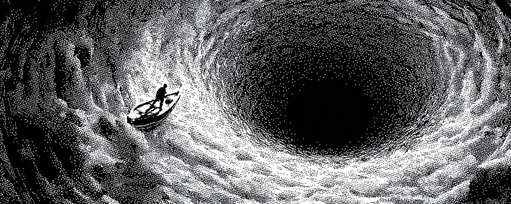

想要成功，你得够妄想
You need to be delusional if you want to succeed
- 分类
- 认知
- 来源
- X · @thedankoe
- 原文
- 整理
- 作者
- DAN KOE / @thedankoe
先看这五句 / Highlights
译者补充，不是原文。
- 现实目标通向平庸。你按父母、老师、五个最亲近的人已经替你写好的人生来设目标，再兑稀一点免得被笑——心智被关进笼子。
- 每个念头与行动都在瞄准某个目标，像热追踪导弹。你不知道那些目标是什么（常常是别人替你选的），就不掌控自己的人生。
- 人之所以独特，是不断模拟未来来操舵现在。
selective attention（选择性注意）让大脑要么被刺激拖走，要么被目标导向。 - 目标不是终点，而是滤镜 /
Reality Distortion Field（现实扭曲场）：它决定大脑看见什么、忽略什么。打中与否不重要，你会落在附近。 - 进入同一现实的三步：装上那个视角（不可能的结果 + 不可能的时间线）→ 立下你不再做的标准 → 走最高杠杆路径（找
force multipliers）。

三种处境
告诉我，下面这些像不像你：
-
你觉得自己被骗了，关于「好人生」长什么样。
你在追一个跟奶奶吃饭时说出来好听的目标。或者一个不会让父母觉得你是失败者的目标。而你看不见它通往任何地方。
如果你无视那种感觉，十年后醒来，你会有一张文凭、一份还不错的工作，以及一种永远不会停的绝望：你再也追不上自己的梦。
-
你很勤奋，却并没有真正朝任何东西前进。
你早起。你听播客。你写日记、你举铁、日历排满，但你不知道自己要去哪儿。
再给五年，你还会在「搞清楚这辈子要干什么」。
-
你有野心，却闭嘴，因为它在朋友和家人听来很尴尬。
你想要一种独特的人生。你不想合群。但当别人问起你的未来，你把它兑稀，好让没人笑话。
你卡在精神自慰里。你因为想变得独特而觉得自己特别，却仍然在做和所有人一样的事。
没人想落到这三种处境里。
这封信会替你改掉这件事。
因为我最爱做的事之一，就是研究成功的人与平庸的人各自在做什么。成功说到底就是这个。多做通向成功的事，少做通向平庸的事。接下来几封信，就专门写这个。
当我们反向工程那些做成了不可能之事的人——Elon Musk、Steve Jobs，以及过去最伟大的创造者、思想者、建造者——我注意到他们之间有一个共同模式。
他们的目标是妄想的。
那就是他们成功的钥匙。
而这正是我们要讲的——为什么普通目标通向失败，妄想目标的心理学，如何进入超级成功者所处的同一现实，以及如何达成多数人认为不可能的事。
现实目标为何通向失败与平庸（你默认就落在这一类）
聪明工程师最常见的错误，是去优化一件本不该存在的东西。
— Elon Musk
你有目标，哪怕你从没设过。
心智就是这样工作的。如果你意识到这一点，很快就能看清：为什么你设下的目标一个都坚持不住。
我们谈的不是新年决心，或其他那种表层目标——你照镜子觉得自己难看就立下、第二天就忘了（因为另一个无意识目标，通常是便利与舒适，或者「别让人注意到你」这个目标，比终于把自己练成形更重要）。
我们谈的是：你每一个念头、每一个行动，都在瞄准一个目标。像一枚热追踪导弹。你在默默优化一个你从没选过、或别人替你选的目标。
停一秒，想想这件事。
你想的、做的每一件事，都朝向一个目标。
这很重要。极其重要。它意味着：如果你不知道那些目标是什么，你就不掌控自己的人生。
过程是这样的：
- 你出生
- 你的第一个目标是生存
- 你的父母已经想了很久他们希望你追求什么目标。他们「想把最好的给你」
- 父母教你走路、教你沟通，最终教你他们版本的成功长什么样，而那通常是社会传给他们的目标（上学、找份好工作、赞美你的神）
- 你去上学，然后上大学，因为那就是「下一步」
- 你拿到工作，你打卡里程碑，你勾选方框
- 然后，人生快过了四分之一，你才开始怀疑：这到底是不是你一开始想要的。
熵说明系统趋向无序。应用到心智上，psychic entropy（精神熵）意味着你的心智，因此你的人生，漂向无序与混乱。
到某个点，系统变得不稳定，必须出现一个新的、更有序的结构，就像水龙头喷出的水最终转成漩涡。
在你的人生里，你会撞上一个点：低处的你想保持原样，高处的你想要更多。感觉像被撕成两半。那是一个信号：彻底扭转你的人生。
现实目标通向失败与平庸，原因在于你怎么选它们。你看看自己觉得可能的东西，再兑稀一点，好让别人不会笑、不会觉得你是白痴。一个目标之所以感觉「现实」，只因为它刚好嵌进父母、老师、或五个最亲近的朋友已经期望你过的那种人生。
换句话说，你的心智在笼子里。
如果你继续选择住在那个笼子里，你永远没有机会注意到一个可能改变人生的机会，更别说行动；你的人生会慢慢变糟，直到痛苦大到把你压垮，或者你终于决定去追一个妄想目标。
妄想目标的心理学
把自己构想成「失败型的人」的人，会找到某种方式失败，不管他有多好的意图、多强的意志力，哪怕机会被直接倒在他腿上。把自己构想成不公的受害者、一个「注定要受苦」的人，会无一例外地找到环境来验证他的看法。
— Maxwell Maltz
人之所以独特，不是因为记忆、意识，或比动物更精细的智力。
人之所以独特，是因为他们不断模拟未来，来操舵现在。
你想未来比想过去多，而未来才是造成你当下行为的东西。不是反过来。你的行动并不创造未来。你先创造未来，再朝它行动。
这叫 selective attention（选择性注意）。
你的大脑要么被刺激拖走，要么被目标导向。
而当你聚焦一件事，按定义，你就没有在聚焦另外 99.99% 你本可以聚焦的事。你的注意力是目标导向的，而不是像破布娃娃一样被甩来甩去、寻找下一口廉价多巴胺。
妄想目标强迫这件事发生。
想象两个人，目标天差地别。
Tommy 的目标和几乎所有人一样——上学、受教育、找份还不错的工作好终于租得起不错的公寓，再攒够物质地位符号来吸引伴侣。
Johnny 有一个看起来不可能的目标——在 6 个月里做出一个月赚 10 万美元的内容生意。
Tommy 有没有可能赚到比「还不错的工作」更多的钱？Tommy 会不会学到学校之外的东西，让他去追更赚钱的机会？不会，因为那不是他的注意力在筛选的东西。他可能撞上改变人生的信息，心智却会把它当成「噪音」，只因为它对正在追的目标没必要。
Johnny 则不能像普通人那样想。要达成那个妄想目标，他意识到自己正在做的大多数行动完全没用。
一个设得对的妄想目标，把你的大脑推进未知，加速 neuroplasticity（神经可塑性）。一致性强化大脑里的通路，但新奇与挑战刺激学习与改变得更快。把开关拨过去、对一个目标 all in，把你的大脑扔进一个别无选择、必须快速重接线的环境，新行为变成你的新基线。
那时候，flow state（心流状态）与痴迷开始创造出一种极乐的生命质量。5 个内在驱动开始叠起来。
- Curiosity（好奇）——探索未知、学习如何改变、填补知识缺口的欲望。结果是来自新奇的好多巴胺，以及去甲肾上腺素，它提高注意力，让你准备好学习。
- Passion（热情）——对那条能让你改变人生的路径，生出强烈热忱。结果是更多好多巴胺和去甲肾上腺素。
- Purpose（目的）——感觉你的行动贡献于比你更大的东西。达成目标带来更多多巴胺，强化行为。血清素来自意义与归属。催产素来自连接。
- Autonomy（自主）——主导自己人生与工作的欲望。控制你的选择、行动与环境。结果又是更多多巴胺，以及皮质醇下降（那种被关进盒子的压力），从而允许创造性决策。
- Mastery（精通）——学习与成长的过程本身就是奖赏。结果是可持续的好多巴胺，让你留在局里。
这一切听起来很好，但我能听见你的反驳。
「可是 Dan，我以前试过设这种目标，这些都没发生。」
是的。
你的目标需要引力。它必须强到让你人生里其他一切都显得愚蠢而无意义。
这很难，我会再写一封信讲如何对一个改变人生的目标变得痴迷的细处；现在，先学怎么正确设下一个妄想目标。
如何进入超级成功者所处的同一现实
每一个伟大的想法，一开始都是亵渎。
— Anthony De Mello
Steve Jobs 会走进房间，把一个不可能的截止日期或不可能的产品说得像已经决定了。
「我们一月出货，而且它会做到这个」——带着如此彻底的确信，那间明知不可能的工程师会带着相信离开，然后朝它建造，仿佛那只是计划本身。
这就是 Jobs 的 Reality Distortion Field（现实扭曲场）。
多数人把它打发成魅力、操纵，或他就是个混蛋；其实那只是他在重新瞄准房间里的注意力。
Jobs 拒绝被「这个时间线不可能成立」这种刺激拖走，用一个未来靶标覆盖它。房间里每一个大脑开始筛选路径，而不是筛选「为什么不行」的理由。
而这就是关键。
你的目标不是你打中的目的地。那是对目标最大的自我提升式误读之一。目标是一个滤镜，决定你的大脑把什么看成重要、把什么忽略。目标是一种视角。你是否真的打中那个目标并不要紧，因为你至少会落在目标附近，做出你从前认为不可能的进展。
要正确设下一个妄想目标、创造你自己的现实扭曲场，需要发生这些事。
拿出笔记本，写下来：
Step 1）装上那个视角
先想一个大到你觉得不可能的目标。
再设一个短到你觉得不可能的时间线。
如果你不知道该设什么目标，甚至不知道这辈子要干什么，有帮助的是：想想你人生里此刻最痛的问题——那个一旦解决，其他问题都会变得更容易的问题。
对多数人，那通常是体能或财务。
去健身房、减掉 20 磅，能极大地提升自信与能量，让你更容易开始扭转人生。
赚更多钱会卸掉压力、打开心智，让你能投资人生的其他领域。
达成目标的具体「怎么做」还不需要发生。仅仅设下目标，就让心智去识别并学习怎么做。
接下来，你需要问自己一个问题：
你刚设的目标和时间线，对现在的你来说是不可能的吗？换句话说，你现在的做法能把你带到那里吗？
如果能，这个目标是线性的，不是不可能的。拒绝它，再把它抬高。
目标必须坐落在你现有技能、习惯、以及对「什么可能」的假设之外——因为正是这个，创造了一个让你看见新现实的镜头，而不是一份待办清单。
最后，目标必须是单一的、自己选的。
你不能有互相竞争的目标。那会劈开焦点，根本形不成视角。
它也不能继承自父母、文化、行业，或你的算法。
设完这个目标的完成态是：你能带着彻底的确信说「我做这个」，并且立刻看见你现在做的大多数事都跟它无关。
欢迎来到未知。最有意义的地方。
Step 2）为你不再做的事设标准，并守住它们
有了一个设得对的妄想目标，几乎没有任何东西能帮你达成它。
所以，你现在必须审计你的人生。每一个习惯、项目、客户、关系、例行、义务。它们有任何一个帮你到达目标吗？答案几乎肯定是没有。
这是最难的部分。
你创造一个你拒绝降低的标准。
这些是你不再做的事，句号。
你不是「差不多」不再周末派对，或「差不多」不再低价接私活——你彻底消灭它们。
当然，说比做容易。人们卡在这里，是因为 sunk cost bias（沉没成本偏差）、恐惧，以及缺乏问责。心智是一台自我欺骗机器，人热爱对自己撒谎。
这是你练习残酷自我诚实、同时撕掉多块创可贴的机会。
提高标准的完成态是：人生感觉戏剧性地更简单。你拥有更少的东西、更少的义务、更少堵塞心智并阻止你行动的借口。
Step 3）聚焦你能走的最高杠杆路径
你的目标创造一个框架，让你能感知新机会。
你的标准从人生里减去一切不为目标服务的东西，给注意力腾出空间朝正确方向移动。
现在你必须接受：真正能达成目标的路径非常少。
但你不会找到一条已经成形的路径、一个人、或一个机会。
拿体能来说，妄想目标（不可能的结果 + 不可能的时间线）是：6 个月后去比健美赛，或今年第一次蹲起 405 磅。
当你设下这个，看注意力发生了什么。突然，「到场、举铁、重复」这条线性路径不再管用。你需要结构。你可能需要一个能快速把你带上正轨的教练。你当前的训练计划必须只聚焦那些能把你带到那里的组数、次数和动作。你开始把睡眠和饮食看成严格且不可谈判的。所有这些，你以前根本没想过，因为你先前的目标把它们滤成了噪音。
当我决定要打出第一个月入 10 万美元（对一个习惯一年赚不到 10 万美元、收入绑定时间的自由职业者来说，这是妄想目标），我在社交媒体上大概只有 1000 个关注者。我显然不会靠「持续发帖、指望算法注意到」这种所有人都在做的事到达那里。
我必须找到 force multipliers（力倍增器）。我需要一个 offer，于是我不再把帖子看成产品，而把它们看成一件人们会付钱买的东西的分发渠道。我需要比自己 1000 个关注者更多的分发，所以我需要向别人借——向一个关注者多得多的人借，意味着我必须跟一个有 5 万关注者的人建立网络、交换价值，好让他们把我的帖子分享给他们的受众，从而带来更多购买我 offer 的人。
收束
如果你也对这条路径感兴趣，考虑加入 Creator Bootcamp。公开招生已关闭，但它随购买 Eden 附赠。
Eden 是第二大脑：你保存任何想法，研究哪些想法已经在奏效，创造人们无法忽视的内容，并且很快随着下一次更新……靠你的知识获得报酬（我的使命是让你上线第一个产品变得没有摩擦，好让你能开始从兴趣里赚钱）。至少，注册一个免费账号四处看看，这样更新上线时你会收到通知。
现在你的焦点是单一的，你比 99% 的人类更「自律」，但你热爱它。这是你能在这个星球上体验到的最伟大的事之一。
如果你感觉不到这种喜悦，那是另一个问题。
下一封信，我们会谈如何给你的目标加上引力。也就是，让你的目标有意义到你忍不住去达成它们。
— Dan